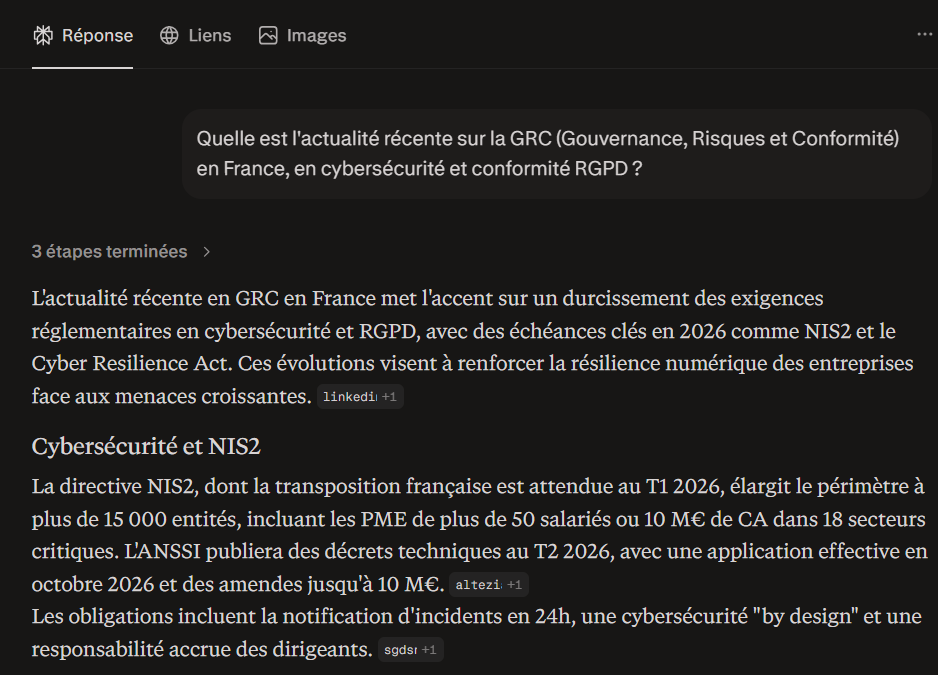
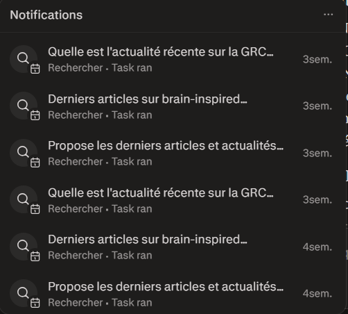

Cybersécurité, GRC et Réglementations 2026
Ma veille se concentre sur l'évolution des réglementations européennes comme NIS2 et le Cyber Resilience Act (CRA), piliers de la stratégie cyber en 2026.
Suivi en temps réel des alertes de l'ANSSI pour la gestion des menaces immédiates.
Accéder au fluxVeille technique sur le durcissement des systèmes (Hardening) et l'administration sécurisée.
Voir les articlesPodcast hebdomadaire sur la cybersécurité stratégique et opérationnelle.
Écouter les podcastsConfiguration d'une alerte quotidienne automatisée ciblant les vulnérabilités 0-day.

Configuration de l'alerte quotidienne
Aperçu d'un rapport de veille généré incluant les sources NIS2 et Cyber Resilience Act.

Synthèse avec sources (Avril 2026)